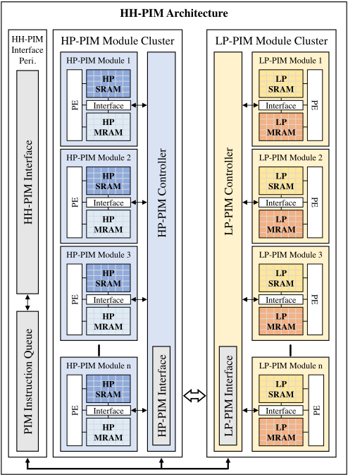
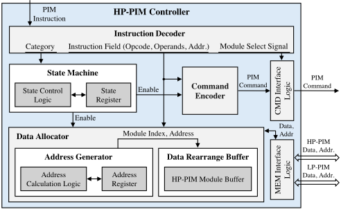
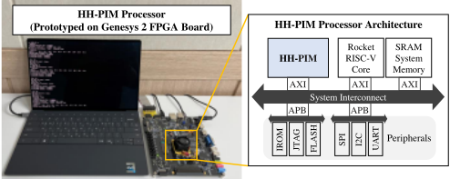
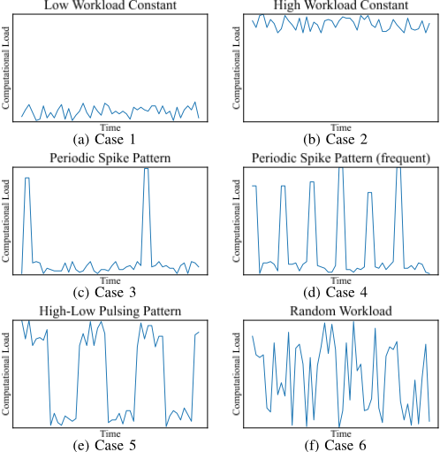
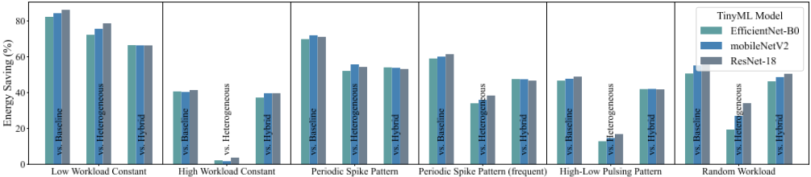
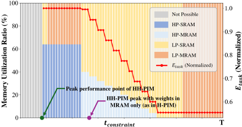

HH-PIM：面向边缘 AI 设备的异构混合 PIM（Heterogeneous-Hybrid PIM）功耗与性能动态优化
论文针对边缘 AI 设备中 PIM 计算资源固定、无法适配实时波动推理负载导致的能效错配问题。作者提出 HH-PIM 架构，在同一处理器中集成 High-Performance（HP）与 Low-Power（LP）两类 PIM 模块簇，每模块含 64kB MRAM+SRAM 混合存储，形成 HP-MRAM/HP-SRAM/LP-MRAM/LP-SRAM 四类存储，并提出基于动态规划的数据放置算法，按负载在运行时周期性重分配权重数据，在满足时延约束下最小化能耗。实现上，团队完成了整个 PIM 处理器的 RTL 设计（RISC-V Rocket 核、AXI 总线、µNoC 互连），在 Genesys2 Kintex-7 FPGA 原型上完成功能与性能测量，并用 45nm Design Compiler 综合与 NVSim 存储模型评估功耗。结果显示 HH-PIM 相对 Baseline-PIM、Hetero.-PIM、Hybrid-PIM 分别取得最高 60.43%、36.3%、48.58% 的平均节能，且满足推理时延要求。对本团队而言，这是一条完整的『架构—RTL—FPGA 原型—功耗评估』工程范例，具有方法学参考价值。
边缘设备用 PIM 架构执行 AI 推理时面临两类挑战：一是 SRAM/DRAM 等易失存储型 PIM 存在漏电与刷新功耗，难以容纳大规模神经网络权重；二是现有 Hybrid-PIM（NVM 存权重 + SRAM 做 I/O 缓冲）的计算资源与存储分配固定，无法适配实时波动的推理负载（如 YOLO 类任务每帧检测目标数变化），按峰值性能配置长期运行造成能量浪费。论文目标是在满足应用时延约束的前提下动态平衡性能与能效。
提出 HH-PIM 异构混合 PIM 架构：处理器内同时部署 High-Performance（HP）与 Low-Power（LP）两个 PIM 模块簇（评估配置为各 4 个模块，每模块 64kB MRAM+SRAM），形成 HP-MRAM、HP-SRAM、LP-MRAM、LP-SRAM 四类存储；配备双控制器（HP-PIM/LP-PIM Controller，含 State Machine、Instruction Decoder、Command Encoder、Data Allocator 及分离的 CMD/MEM Interface Logic）管理并同步不同速度的模块，跨簇数据搬运由 Data Rearrange Buffer 吸收速度差异。打破『NVM 只存权重、SRAM 只做 I/O』的惯例，高负载时 SRAM 也用于权重存储，PIM 模块支持可变操作数数量以适配 MRAM/SRAM 读时延差异。数据放置方面，将时延约束下的能耗最小化建模为背包问题变体（unbounded + multi-choice knapsack，NP-hard），用自底向上动态规划分别对 HP/LP 簇生成 DP 表再合并求解 (k_hp, k_lp)，DP 表仅在应用初始化时计算一次生成 LUT，优化分辨率限制在每 time slice 的 1% 以内。整个处理器基于 RISC-V Rocket 核做 RTL 实现，经 AXI 与核通信、µNoC 作互连，在 Genesys2 Kintex-7 FPGA 上以 50MHz 原型验证，功耗由 45nm Nangate PDK 的 Design Compiler 综合与 NVSim 存储模型（HP 1.2V / LP 0.8V）合成评估。
相对 Baseline-PIM、Hetero.-PIM、Hybrid-PIM 的平均节能最高分别达 60.43%、36.3%、48.58%（同时满足应用时延要求）
最佳场景 Case 1（持续低负载）相对 Baseline-/Hetero.-/H-PIM 节能最高达 86.23%、78.7%、66.5%；最差场景 Case 2（持续高负载）相对 Baseline- 与 H-PIM 仍节能 41.46% 与 39.69%，但相对 Hetero.-PIM 仅 3.72%
在 t_constraint 最长的能效区间，相对未优化数据放置，E_task 最高降低 43.17%
峰值性能点（权重 SRAM+MRAM 混合存储）下 EfficientNet-B0/MobileNetV2/ResNet-18 推理时间分别为 31.06ms/25.71ms/320.87ms，而权重仅存 MRAM 时为 44.5ms/36.84ms/459.74ms
ResNet-18 相对 baseline 的节能在各 case 间差异最高达 8.59%
原型基于 Genesys2 Kintex-7 FPGA、50MHz；Algorithm 1/2 复杂度为 O(n·T·K) 与 O(T·K)，仅初始化执行一次，优化计算时间限制在每 time slice 的 1% 以内
区别于以往 Hybrid-PIM 按『NVM 存权重、SRAM 做 I/O 缓冲』的固定数据特征分配方式，HH-PIM 将 big.LITTLE 式异构双簇（HP/LP）思想引入 PIM，允许高负载时 SRAM 也存权重，并配套运行时动态数据放置算法（背包变体 DP + LUT）按实时负载在四类存储间周期性重分配权重，在时延约束下实现动态节能；同时为跨速度、跨簇的同步与数据搬移专门设计了双控制器与 Data Rearrange Buffer。
相关度级别：high
命中能力域：2.1 IP 架构与微架构 | 2.2 RTL 设计与实现 | 2.6 仿真性能与加速器
理由：论文直接命中团队多个能力域：2.2（可综合 RTL 设计与低功耗设计——完成含双控制器、Data Allocator、CMD/MEM 接口逻辑的整个 PIM 处理器 RTL，power-gating 是核心节能手段）；2.6（FPGA 原型——Genesys2 Kintex-7 原型用于功能验证与性能测量）；2.1（面向 PPA 的存储架构权衡与 workload-driven 优化——HP/LP 异构簇设计及按时延约束的动态数据放置）。但产品形态是边缘 MRAM/SRAM PIM AI 处理器，与团队 LPDDR5X/HBM4/UCIe 高速存储与互连 IP 产品线不同，主要价值在方法学与存储架构演进参考，而非直接产品复用，故评为 high 但建议以方法参考方式采纳。
建议动作：作为方法参考存档
arXiv:2504.01468v1 [cs.AR] 2025年4月2日
Sangmin Jeon †、Kangju Lee †、Kyeongwon Lee 与 Woojoo Lee ∗ 韩国首尔中央大学智能半导体工程学院 { jademin96, agl0312, since69se, space } @cau.ac.kr
摘要——存内计算（Processing-in-Memory，PIM）架构为在能耗受限的边缘环境中高效处理人工智能（AI）应用提供了颇具前景的解决方案。传统 PIM 设计通过减少存储器与处理单元之间的数据搬运来提升性能与能效，但由于持续的功耗需求以及在静态随机存取存储器（SRAM）和动态随机存取存储器（DRAM）中存储大型神经网络权重的存储需求，其在边缘设备中的应用受到限制。采用磁阻式随机存取存储器（MRAM）和阻变随机存取存储器（ReRAM）等非易失性存储器的混合 PIM 架构虽可缓解上述局限，却难以应对固定计算资源与动态变化的推理工作负载之间的失配问题。为应对这些挑战，本研究提出了一种异构混合 PIM（HH-PIM）架构，由高性能 MRAM-SRAM PIM 模块和低功耗 MRAM-SRAM PIM 模块组成。我们进一步提出了一种数据放置优化算法，可根据计算需求动态分配数据，从而最大化能效。基于配备 HH-PIM 及其他类型 PIM 的处理器的现场可编程门阵列（FPGA）原型验证与功耗仿真表明，所提出的 HH-PIM 在满足应用延迟要求的同时，相比传统 PIM 可实现高达 60.43% 的平均能耗节省。这些结果证实了 HH-PIM 适用于边缘设备中自适应、高能效的 AI 处理。
随着人工智能（AI）的出现，现实世界的应用正在迅速扩展，推动了将 AI 能力嵌入到各个领域物联网（IoT）设备中的趋势。然而，以服务器为中心的传统数据处理方式（如云计算）由于处理和通信过载而面临严峻的能耗与延迟挑战。因此，将 AI 工作负载分发到边缘设备已成为一种有前景的解决方案，近期的研究聚焦于通过支持轻量级本地计算的 TinyAI 模型来实现设备端 AI [1], [2]。
在能耗受限的边缘环境中，集成存内计算（PIM）架构已成为高效执行 AI 应用的一种有前景的方法 [3]-[8]。PIM 通过最大限度地减少处理单元与存储单元之间的数据搬运开销，提升了 AI 应用等访存密集型任务的性能与能效。早期的 PIM 设计主要采用静态随机存取存储器（SRAM）[9] 和动态随机存取存储器（DRAM）[10] 等易失性存储器，但由于易失性存储器存在持续的供电需求，加之 SRAM 漏电功耗以及 DRAM 所需的周期性刷新等问题，这些设计在存储大型神经网络权重方面面临挑战。为了解决这些局限，研究者提出了基于非易失性存储器（NVM）的 PIM 架构，例如磁阻随机存取存储器（MRAM）[11], [12] 和阻变随机存取存储器（ReRAM）[13], [14]。这些设计在权重存储方面实现了高能效，尤其是在与电源门控技术结合使用时。然而，NVM 可能引入额外的读写延迟，从而可能影响神经网络的整体性能。因此，PIM 设计的最新进展引入了将 SRAM 与 NVM 相结合的混合架构，称为混合存内计算（Hybrid-PIM, H-PIM）。这类架构使用 NVM 存储权重数据，并将 SRAM 用作输入与输出数据的缓冲器，从而同时提升了性能与能效 [15]-[17]。
然而，在边缘设备上推理负载实时波动的动态场景中，H-PIM 在实现最优能效方面面临明显的局限。例如，运行 YOLO 模型执行实时目标检测的边缘设备，其处理需求会随每帧视频检测到的目标数量而发生显著变化。在所有时间段内均以固定性能水平运行——该性能水平通常按峰值计算负载设定——不可避免地导致低效的能耗。为解决这一问题，我们观察到，固定计算资源与动态变化的工作负载之间的失配长期以来一直是传统以 CPU 为中心的架构所面临的挑战。为此，动态电压频率调节（DVFS）[18]- [21] 以及采用高性能核心与低功耗核心的异构多处理器架构 [22]-[24] 等成熟方案已针对此目的得到广泛研究。我们的研究重点聚焦于异构架构，因为 DVFS 在边缘设备中仍面临重大挑战，其原因在于 DC-DC 转换器和实时功耗监测等额外引入的设计复杂性。相比之下，以 ARM 的 big.LITTLE 架构 [25] 为代表的异构架构已在商用处理器中得到广泛实现，通过适应动态计算负载有效提升了能效。基于这一洞察，我们提出将集成了存储器与用于独立计算的处理元件（PE）的 PIM 模块配置为高性能与低功耗两种配置。这种方法使 PIM 架构能够在应用程序的整个运行期间动态平衡性能与能耗。
本文已被第 62 届设计自动化会议（DAC 2025）录用并即将发表。本文档为最终排版版本。
† Sangmin Jeon 和 Kangju Lee 对本工作做出了同等贡献。
∗ Woojoo Lee 为通讯作者。
为进一步阐述这一思路，我们提出了异构混合 PIM（HH-PIM），这是一种旨在为边缘设备上的 AI 应用动态优化性能与能效的架构。HH-PIM 集成了两个不同的 PIM 模块：高性能（HP）PIM 模块和低功耗（LP）PIM 模块。每个模块的存储器由磁阻式随机存取存储器（MRAM）与静态随机存取存储器（SRAM）存储体的混合配置构成，从而形成四种类型的存储器：HP-MRAM、HP-SRAM、LP-MRAM 和 LP-SRAM。与传统的混合 PIM 架构不同——在传统架构中，非易失性存储器（NVM）主要用于权重存储，而 SRAM 则被保留用作输入输出缓冲区——HH-PIM 采用了自适应方法。在高计算需求期间，HH-PIM 也会主动利用 SRAM 进行权重存储，从而最大化对波动推理负载的响应能力。此外，为了充分发挥 HH-PIM 架构的优势，我们提出了一种最优数据分布算法，通过在四种存储器类型之间动态调整数据分配来最小化能耗。这一组合优化算法将权重数据分配至 HP-MRAM、HP-SRAM、LP-MRAM 和 LP-SRAM，在平衡 HP-PIM 与 LP-PIM 之间工作负载的同时降低能耗。借助这一设计，HH-PIM 能够高效适应 AI 应用不断变化的计算需求，在不牺牲性能的前提下实现显著的节能。
为了验证所提出技术的功能并评估其有效性，我们对存储器和处理单元（PE）进行了建模，并结合 HH-PIM 架构对整个 PIM 处理器进行了寄存器传输级（RTL）设计。随后，我们进行了 FPGA 原型验证，以确认所开发 PIM 处理器的正确运行并测量其性能，同时通过采用 45nm 工艺技术的综合以及存储器模型仿真获得了功耗测量结果。通过多种基准测试场景，我们实验验证了所提出的 HH-PIM 架构与数据分布算法的节能潜力。结果表明，我们的方法能够在满足边缘计算环境中 AI 应用延迟要求的同时实现能效最大化。具体而言，与传统的基于 PIM 的处理器相比，所开发的 PIM 处理器对实时推理负载变化表现出更优的适应性，在不同基准测试场景下相对于基线处理器实现了高达 60.43% 的平均能耗节省。这些结果验证了 HH-PIM 架构对于在运行 AI 应用的边缘处理器中实现效率最大化的适用性。
HH-PIM 的这种异构混合架构能够灵活适应 AI 应用推理负载的实时变化。当计算需求较高时，可以主动利用 HPPIM 模块和 SRAM 来提升处理器性能；反之，在低需求场景下，可将计算最大限度地分配给 LP-PIM 模块，以满足应用的延迟要求并最大化能效。要有效实现这一策略，必须精确地设计 PIM 控制器，因为它们在同步以不同速度运行的组件以及最小化 PIM 操作之间的数据搬运开销方面发挥着至关重要的作用。

HP-PIM 控制器与 LP-PIM 控制器的架构在本质上是完全相同的。图 2 给出了 HP-PIM 控制器的架构框图，该控制器由状态机（State Machine）、指令译码器（Instruction Decoder）、命令编码器（Command Encoder）、数据分配器（Data Allocator）和接口逻辑（Interface Logic）组成。控制器通过基本的 PIM 指令周期运行，该周期包括 FETCH-DECODE-LOAD-EXECUTE-STORE 各阶段，并由状态机在内部进行管理。指令译码器将取回的指令译码为多个组成部分，例如指令类型（Category）、待由 PIM 模块执行的特定操作或数据搬运细节（Instruction Field），以及该操作的目标模块（Module Select Signal）。随后，命令编码器根据译码后的指令细节为每个 PIM 模块生成命令信号。
为了最小化 HPPIM 模块与 LP-PIM 模块之间、以及每个 PIM 模块内部 MRAM 与 SRAM 之间的频繁数据搬运开销——这些数据搬运源于 HH-PIM 架构的动态能耗优化——如图 2 所示，HHPIM 的控制器设计引入了数据分配器，并对接口逻辑进行了分离。数据分配器负责管理数据的放置，以便在执行 AI 应用中卷积、乘累加（MAC）等各类计算的 PIM 操作期间，将外部数据搬运降至最低。此外，接口逻辑被划分为用于向 PIM 模块传送命令的 CMD 接口逻辑（CMD Interface Logic）和用于在 PIM 模块之间进行数据搬运的 MEM 接口逻辑（MEM Interface Logic）。当操作数数据被恰当地放置在每个 PIM 模块的存储器中时，计算便可仅通过 CMD 接口逻辑高效地进行。而且，MEM 接口逻辑的带宽根据每个集群内 PIM 模块的数量进行相应扩展，从而使来自多个 PIM 模块的数据传输能够跨集群同时并行进行。

控制器在 PIM 模块之间进行数据搬移的操作流程如下。首先，当来自核心的数据放置指令触发 HP-PIM 与 LP-PIM 模块之间的数据传输时，控制器对该指令进行译码，并将相关的操作与地址信息提供给数据分配器（Data Allocator）。数据分配器根据所提供的地址，经由 MEM 接口逻辑（MEM Interface Logic）访问各 PIM 模块中的存储器，并将待传输的数据存入数据重排缓冲区（Data Rearrange Buffer）。数据重排缓冲区会保留这些数据，直至对侧集群中的目标 PIM 模块准备好进行数据写入，从而避免因 HP-PIM 与 LP-PIM 模块之间的速度差异而导致的数据冲突。随后，数据分配器内部的地址生成器（Address Generator）生成对侧集群中的目标 PIM 模块索引与存储体地址，以便于数据搬移。生成的地址随后被提供给数据重排缓冲区，使其能够将缓冲的数据写入指定 PIM 模块的存储体中。
综上所述，HH-PIM 中的 PIM 控制器经过精心设计，既支持 HP-PIM 与 LP-PIM 模块之间的数据传输，又能有效管理各 PIM 模块内部的操作。该设计保持了操作的一致性并防止了数据冲突，助力 HH-PIM 架构实现其实时性能与能效优化的设计目标。
在 HH-PIM 架构中实现最优数据放置，对于在确保应用流畅执行、不引入延迟的同时达到最大能效至关重要。在 HH-PIM 中，神经网络的每一层被分布到 HP-PIM 与 LP-PIM 模块上进行并行计算，最终输出通过聚合各模块的结果获得。当以高性能为优先时，关键在于尽量减少空闲时间，即 HP-PIM 模块快速完成自身任务后却必须等待较慢的 LP-PIM 模块的情况。为实现低输出延迟，必须仔细管理 HP-PIM 与 LP-PIM 模块之间均衡的数据分布，以及具有不同读/写延迟的 MRAM 与 SRAM 的最优利用率。
另一方面，当 AI 应用并不总是要求尽可能低的推理延迟时，可以将能效置于优先地位。在这种情况下，HH-PIM 可以在低于峰值性能的状态下运行，通过向高能效的 LP-PIM 模块分配更多数据并提高 MRAM 的使用率，从而在保持可接受的应用延迟的同时提升整体能效。基于这一思路，我们提出了一种动态数据放置策略，该策略在运行期间周期性地调整权重数据的分布。该策略根据实时需求转移计算负载，在满足应用最低延迟要求的前提下，专注于最大化节能效果。
在所提出的权重数据放置策略中，数据重分配每隔预定义的时间间隔 T 进行一次，该间隔被称为时间片（time slice）。我们将 AI 应用中由单次推理过程生成的一组 PIM 操作定义为一个任务（task）。这些由推理生成的任务被存储在任务缓冲区（task buffer）中，HH-PIM 在当前时间片内依次处理自上一个时间片存储下来的任务。这种方式确保 HH-PIM 的操作延迟不超过 2T，从而维持 AI 应用所要求的推理延迟。在这一框架下，任务缓冲区中存储的任务数量决定了每个任务在时间片内被无延迟处理所需的最小时间约束 t constraint。具体而言，每个任务的处理时间 t task 不得超过 t constraint，以保证所有任务都能在所分配的时间片内完成，从而确保系统满足所要求的最大延迟。
所提出的方法旨在在时间约束 t constraint 内为每个任务实现最节能的数据分布。HH-PIM 架构包含四个不同的存储空间：HP-MRAM、HP-SRAM、LP-MRAM 和 LP-SRAM，每个存储空间都具有不同的功耗与延迟特性。因此，我们面临一个离散组合优化问题，即确定每个权重数据的最优放置位置，以使能耗最小化。该问题可以归约为著名的背包问题（knapsack problem）[27]，并需针对我们的具体场景进行必要的适配。在这里，每个存储空间对应背包问题中的一个物品 i，而时间约束 t constraint、任务执行时间 t task 和每任务能耗 E task 分别对应背包的容量、物品重量和物品价值。然而，该问题比标准背包问题更为复杂，因为它同时兼具无界背包（unbounded knapsack，源于可对某一特定存储空间进行多次选择）和多选择背包（multi-choice knapsack，源于被选存储空间的总数固定，等于权重数据的数量）两种问题的特性。
该问题的数学表述如下：
其中，n 表示存储空间的数量，x i 表示分配给存储空间 i 的数据数量，k 为待存储的权重数据总数。此外，t i 和 e i 分别表示存储空间 i 中每个权重的计算时间和每个权重的能耗。该公式定义了以最小化每任务能耗 E task 为目标的目标函数，以及关于执行时间和所选物品总数的约束条件。
由于该问题本质上比标准背包问题更为复杂，因此天然属于 NP 难（NP-hard）问题。为了求解式 (1) 中定义的优化问题，我们提出了一种自底向上的动态规划（Dynamic Programming, DP）方法。该方法使用 DP 表来存储中间结果，从而避免冗余计算，并逐步求解该问题。递推关系定义如下：
其中，i、t 和 k 分别表示当前所考虑的存储空间、时间约束以及权重的数量。
接下来，Algorithm 2 利用分别为 HP-PIM 和 LP-PIM 生成的 DP 表 dphp 和 dplp 的结果，找出使能耗最小的 k 值最优组合。其中，min energy 表示最小能耗，而 k opt hp 和 k opt lp 表示在该最小能耗下分配给 HP-PIM 和 LP-PIM 的权重数量。最终，Algorithm 2 得到 allocation state [ n ][ t ]，它表示每个时间约束下权重数据的分布状态。在所提出的方法中，Algorithm 1 和 Algorithm 2 仅在应用初始化阶段执行一次，用于为最终输出 allocation state 构建查找表（Look-up Table, LUT）。借助该 LUT，在应用运行期间，可以针对每个时间片所需的各个 t constraint 值快速确定最优的权重放置状态。此外，运行时对 t constraint 的计算还结合了数据
1: function SET ALLOCATION STATE
2: for t from 0 to T :
3: 设置 min energy = ∞ , k opt hp = 0 , k opt lp = 0
4: for khp from 1 to K :
5: klp = K - khp
6: if dphp [ n/ 2 ][ t ][ khp ] + dplp [ n/ 2 ][ t ][ klp ] < ∞ then
7: if min energy > dphp [ n/ 2 ][ t ][ khp ] + dplp [ n/ 2 ][ t ][ klp ] then
8: min energy = dphp [ n/ 2 ][ t ][ khp ] + dplp [ n/ 2 ][ t ][ klp ]
9: k opt lp = klp
10: end if
11: end if
12: 若 min energy 仍为 ∞ ，则继续下一个 t
13: k opt hp = K - k opt lp
14: 用当前的 k opt hp 和 k opt lp 设置 allocation state [ n ][ t ]
15: end for
16: end for
17: end function
| Architecture | PIM Module Configuration | Memory Types (per module) |
|---|---|---|
| Baseline-PIM | 8 HP-PIM | 128kB SRAM |
| Heterogeneous-PIM | 4 HP-PIM + 4 LP-PIM | 128kB SRAM |
| Hybrid-PIM | 8 HP-PIM | 64kB MRAM + 64kB SRAM |
| HH-PIM | 4 HP-PIM + 4 LP-PIM | 64kB MRAM + 64kB SRAM |
| Architecture | PIM Module Configuration | Memory Types (per module) |
搬运开销时间，即从前一时间片的数据分配过渡到新分配所需的过渡时间，从而确保不会因数据搬运开销而产生推理延迟。
Algorithm 1 和 Algorithm 2 的时间复杂度分别为 O ( n · T · K ) 和 O ( T · K ) 。尽管这些算法仅在应用初始化阶段执行一次，但 T 的完整时间片范围以及权重数据数量 K 之大——在轻量级神经网络模型中通常达数万至数十万——可能为边缘处理器中所有点上的能耗优化带来相当大的开销。为缓解这一问题，我们限制了优化的分辨率，以确保总计算时间不超过每个时间片的 1%，从而避免过度细粒度的计算。由此得到的最优数据分布以及能效方面的提升将在下一节中给出，同时附上详细的实验设置。
为了评估所提出的 HH-PIM 架构及其数据放置优化策略的有效性，我们首先在寄存器传输级（RTL）实现了图 1 所示的 HH-PIM 架构。HP 集群与 LP 集群各自配置了四个 HP-PIM 模块和四个 LP-PIM 模块，每个 PIM 模块均配备 64kB 的 MRAM 和 SRAM。为了进行公平而精确的比较，我们建立了 Baseline-PIM、Heterogeneous-PIM（Hetero.-PIM）和 Hybrid-PIM 作为对照组，各对照组同样均在 RTL 层级实现。表 I 给出了各对照组的规格。
随后，我们开发了配备所提出的 HH-PIM 以及各对比 PIM 架构的处理器。RTL 设计与仿真采用 RISC-V eXpress（RVX）[28]、[29] 进行。图 3 右侧的框图展示了配备 HH-PIM 的处理器架构，该架构由单个 RISC-V Rocket [30] 核构成。为了便于大规模 AI 应用数据的高效传输与接收，HH-PIM 通过 AXI 协议与该核通信，可提供高带宽与低延迟。在系统互连方面，我们采用了 µNoC [31]，这是一种针对边缘设备优化的轻量级片上网络（Network-on-Chip）。

| IPs | LUTs | FFs | BRAMs | DSPs |
|---|---|---|---|---|
| RISC-V Rocket Core | 14,998 | 9,762 | 12 | 4 |
| Peripherals | 4,704 | 7,159 | - | - |
| System Interconnect | 5,237 | 7,720 | - | - |
| HP-PIM Module | 968 2,823 | 1,055 875 | 32 - | 2 - |
| HP-PIM Module Controller | ||||
| Total (HP-PIM module cluster) | 6,951 | 5,460 | 128 | 8 |
| LP-PIM Module | 1,074 | 1,094 | 32 | 2 |
| LP-PIM Module Controller | 2,149 | 875 | - | - |
| Total (LP-PIM module cluster) | 6,680 | 5,616 | 128 | 8 |
| IPs | LUTs | FFs | BRAMs | DSPs |
接下来，我们通过对所开发处理器进行现场可编程门阵列（FPGA）原型验证，开展了功能验证与性能评估。首先，我们在 RTL 层级对 SRAM 的操作与时延进行了建模，表 III 报告了该模型中所采用的读/写时延。上述结果使用 NVSim 仿真工具 [32] 在 45nm 工艺下获得，其中 HP-PIM 与 LP-PIM 分别采用 1.2V 和 0.8V 两种不同的工作电压。特别是，LP-MRAM 的 0.8V 工作电压是基于已流片 STT-MRAM 芯片的最新规格 [11]、[33]。随后，我们将所开发的处理器编程实现到 Genesys2 Kintex-7 FPGA 开发板 [34] 上。原型的工作时钟频率设置为 50 MHz，存储器时延则根据表 III 进行等比缩放。图 3 右侧的照片展示了 HH-PIM 处理器的原型，表 II 则报告了该原型的资源占用情况。
我们通过运行基准测试应用验证了 FPGA 原型的正确运行并测量了性能指标，预期所得结果与在 50 MHz 频率下运行的 SoC 上观察到的结果相似 [28]。对于 AI 基准测试应用，我们使用了基于 CNN 深度学习骨干网络（如 EfficientNetB0 [35]、MobileNetV2 [36] 和 ResNet-18 [37]）的 TinyML 模型，这些模型适用于边缘 AI 设备。我们提取了这些模型的特征与运算，计算了 PIM 运算占总运算的比例，并将这些比例纳入基准测试应用中。在每个 TinyML 模型中执行数据放置算法的时间片被设置为每个时间片最多允许 10 次推理，代表 HH-PIM 以最大性能运行的场景。表 IV 报告了纳入基准测试应用的各模型的特征。此外，为了反映运行时所遇到的动态计算负载变化，我们配置了如图 4 所示的六种工作负载场景。这些场景包括持续低负载模式（Case 1）、持续高负载模式（Case 2）、周期性尖峰模式（Case 3 和 Case 4）、高低负载交替的脉冲模式（Case 5）以及随机负载模式（Case 6）。尖峰和脉冲模式模拟了边缘设备上 AI 应用中的真实场景，即计算需求周期性激增的情况。
| Latency.( ns ) | STT-MRAM.Read | STT-MRAM.Write | SRAM.Read | SRAM.Write | PE. |
|---|---|---|---|---|---|
| HP-PIM ( V dd = 1 . 2 V ) | 2.62 | 11.81 | 1.12 | 1.12 | 5.52 |
| LP-PIM ( V dd = 0 . 8 V ) | 2.96 | 14.65 | 1.41 | 1.41 | 10.68 |
| Latency.( ns ) | STT-MRAM.Read | STT-MRAM.Write | SRAM.Read | SRAM.Write | PE. |
| Model | # Param | # MAC | PIM Operation | - |
|---|---|---|---|---|
| EfficientNet-B0 MobileNetV2 ResNet-18 | 95k 101k 256k | 3.245M 2.528M 29.580M | 85% 80% 75% | INT8 Quantized & Pruned |
| Model | # Param | # MAC | PIM Operation | - |

| Power. | STT-MRAM.Dynamic (Read/Write) | STT-MRAM.Static | SRAM.Dynamic (Read/Write) | SRAM.Static | PE.Dynamic | PE.Static |
|---|---|---|---|---|---|---|
| HP-PIM | 428.48 / 133.78 | 2.98 | 508.93 / 500 | 23.29 | 0.9 | 0.48 |
| LP-PIM | 179.05 / 47.78 | 0.84 | 177.3 / 177.3 | 5.45 | 0.51 | 0.25 |
| Power. | STT-MRAM.Dynamic (Read/Write) | STT-MRAM.Static | SRAM.Dynamic (Read/Write) | SRAM.Static | PE.Dynamic | PE.Static |
为了测量所开发处理器的功耗，我们随后在 45nm 工艺技术下对其进行了综合。除存储器之外的 RTL 设计使用 Synopsys Design Compiler 并基于 45nm Nangate PDK [38] 进行综合，而存储器功耗值则如前文所述，通过 45nm 工艺下的 NVSim 仿真获得。表 V 详细列出了各存储器类型的功耗。随后，我们将这些功耗值与从 FPGA 原型测得的各基准测试的执行时间相结合，以计算总能耗。能耗的详细分析，以及图 5 所示的各种基准测试场景下的节能结果，将在下一节中进一步讨论。
图 6 报告了将所提出的数据放置优化算法应用于在 HH-PIM 上执行的基准测试应用程序的结果。x 轴表示时间片（T）内的 t constraint，左 y 轴表示在给定 t constraint 下由最优数据放置所确定的存储器利用率，右 y 轴则表示 HH-PIM 相应的任务能耗 E task。图中的灰色区域表示 t constraint 过小的情况，即所需性能过高，超出了 HH-PIM 的处理能力。绿色圆点标记了 HH-PIM 以峰值性能运行、满足应用程序性能要求的点。在这一点上，HH-PIM 积极利用 SRAM 进行数据存储，全部神经网络数据以 16:9 的比例存储在 HP-SRAM 与 LP-SRAM 之间，从而使 PIM 模块的空闲时间最小化。在这一点上，EfficientNet-B0、MobileNetV2 和 ResNet-18 基准测试的推理时间分别测得为 31.06 ms、25.71 ms 和 320.87 ms。正如预期，能耗在这一点达到峰值，图中 E task 以该值为基准进行归一化。此外，紫色圆点表示当权重仅存储在 MRAM 中时（如以往的 H-PIM 那样）HH-PIM 的峰值性能点。在这一点上，EfficientNet-B0、MobileNetV2 和 ResNet-18 基准测试的推理时间分别为 44.5 ms、36.84 ms 和 459.74 ms。这表明，如本文所提出的，同时利用 SRAM 和 MRAM 进行权重存储在性能方面优于传统方法。


图 6 展示了随着 t constraint 的增大，权重数据在各存储器类型之间的顺序分配情况。具体而言，数据分布依次经历 HP-SRAM 与 LP-MRAM 的组合、HP-MRAM 与 LP-SRAM 的组合、仅使用 LP-SRAM，以及最终仅使用 LP-MRAM。这一顺序体现了各存储器类型在性能与能效之间的权衡。在 t constraint 最长的区间内，所有权重数据均仅存储于 LP-MRAM 中，而 LP-MRAM 以最低功耗运行。在这种配置下，其他存储器类型通过电源门控（power-gating）被关断，从而消除待机功耗并最大化处理器的能效。因此，在这一高效区间内，与未优化的数据分配相比，HH-PIM 的 E task 最多可降低 43.17%。这一显著降幅凸显了所提算法在真实边缘 AI 应用中的实用价值。此外，在 t constraint 的中间区间，随着 t constraint 的增大，E task 呈现出准线性下降并伴有间歇性的平台期。这一模式反映了该算法在满足推理延迟约束的同时，将数据逐步迁移至更低功耗存储器的能力。这些结果表明，所提方案在每个 t constraint 下都能在应用推理延迟约束内实现最优能效，确保 HH-PIM 能够动态分配数据，从而有效平衡节能与性能。
| ES (%) over | Baseline- PIM | Hetero.- PIM | H-PIM |
|---|---|---|---|
| Case 3: Periodic Spike | 72.01 | 55.78 | 54.09 |
| Case 4: Periodic Spike (frequent) | 61.46 | 38.38 | 47.6 |
| Case 5: High-Low Pulsing | 48.94 | 16.89 | 42.1 |
| Case 6: Random | 59.28 | 34.14 | 50.52 |
| ES (%) over | Baseline- PIM | Hetero.- PIM | H-PIM |
图 5 展示了在图 4 所示的各种推理模式场景下，HH-PIM 在 50 个时间片上执行基准测试应用时，相较于 Baseline-PIM、Hetero.-PIM 和 H-PIM（Hybrid-PIM）所取得的节能效果。对 HH-PIM 而言，最佳情形是 Case 1（低负载恒定），即推理模式在所有时间区间内均保持较低。在该场景下，HH-PIM 相较于 Baseline-PIM、Hetero.-PIM 和 H-PIM 分别实现了高达 86.23%、78.7% 和 66.5% 的节能。相反，最差情形出现在 Case 2（高负载恒定）中，此时推理模式始终保持较高。在此情形下，HH-PIM 相较于 Baseline-PIM 和 H-PIM 仍分别取得了高达 41.46% 和 39.69% 的显著节能。然而，相较于 Hetero.-PIM 的节能仅为 3.72%，这是因为在该场景下 HH-PIM 与 Hetero.-PIM 都主要使用 HP-SRAM 和 LP-SRAM，因而差异极小。其他情形的详细节能数据见表 VI。HH-PIM 在 ResNet-18 上相对于基线取得了最高的节能效果，各情形之间的差异最高达 8.59%。平均而言，HH-PIM 相较于 Baseline-PIM、Hetero.-PIM 和 H-PIM 分别实现了高达 60.43%、36.3% 和 48.58% 的节能。
在本研究中，我们提出了 HH-PIM 架构，旨在边缘设备上高效执行人工智能（AI）应用。该架构集成了 HP MRAM-SRAM PIM 模块与 LP MRAM-SRAM PIM 模块，以实现性能与能效之间的平衡。此外，我们提出了一种数据放置优化算法，可根据计算需求动态分配数据，在满足应用性能要求的同时最大化节能效果。为验证所提出架构与算法的有效性，我们设计了集成 HH-PIM 的处理器，并建立了分别配备 Baseline-PIM、Heterogeneous-PIM 和 Hybrid-PIM 架构的处理器作为对比基线。这些设计通过 FPGA 原型验证与功耗仿真进行了评估。通过运行多种边缘 AI 应用基准测试，所提出的 HH-PIM 展现了其优越性，相较于传统 PIM 架构实现了高达 60.43% 的平均节能，同时满足应用性能要求。
2 条证据未在原文中核对到